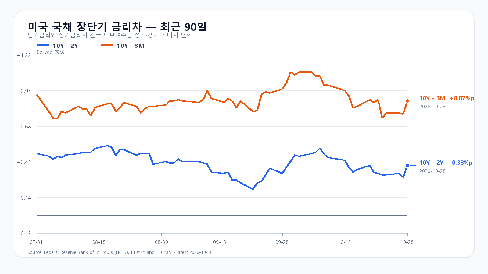
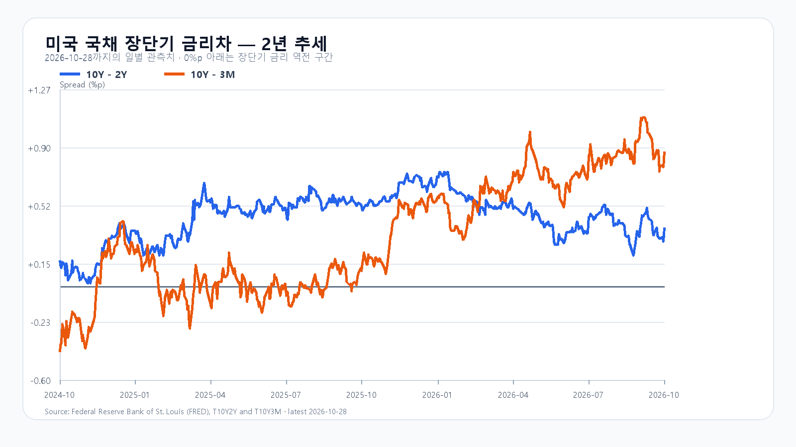

KOSPI가 하루 6.63% 올라 6,012.44로 마쳤습니다. SK하이닉스 실적을 소화하며 단숨에 올라선 자리에서 오늘은 매수세가 남아 있는지를 시험합니다. 미국 반도체의 추가 상승은 힘을 보태지만, 밤사이 클라우드 기업 실적은 AI 수요의 성장과 투자 부담을 동시에 드러냈습니다.
성장은 이어졌지만 현금흐름은 갈렸다
Microsoft의 분기 매출은 922.79억달러로 19% 늘었고 Azure 매출은 48% 증가했습니다. 클라우드 수요가 이어진다는 근거입니다. Microsoft 실적
Alphabet은 Cloud 매출이 103% 늘어난 307억달러였지만 설비투자 513.55억달러가 영업현금흐름 422.90억달러를 웃돌았습니다. 잉여현금흐름은 90.65억달러 적자입니다. 메모리를 사들이는 고객의 수요 성장과 그 투자를 감당하는 현금 여력을 함께 볼 이유입니다. Alphabet 실적
금리 동결 뒤에도 할인율 부담은 남았다
연준은 기준금리를 3.75~4.00%로 유지했습니다. 표결은 10대 2였고 반대한 두 위원은 0.25%포인트 인상을 원했습니다. 동결 자체를 곧바로 완화 신호로 읽기는 어렵습니다. 높은 금리가 이어지면 AI 투자기업의 자금조달과 성장주의 가치평가에 부담이 남습니다. 연준 성명
6,000선 안착과 반도체 매수의 폭
전일 KODEX 레버리지는 14.76% 오른 80,280원으로 마쳤습니다. 오늘은 KOSPI 6,000선에서 매물이 나와도 5,900선 위로 지지를 높이는지, 반도체 두 종목의 상승이 금융·자동차·조선으로 퍼지는지가 관건입니다. 미국의 반도체 상승 중 한국 실적을 뒤따른 부분은 전일 급등과 같은 재료입니다.
기본 시나리오는 KOSPI 5,900~6,100, 확률 50%입니다. 6,100을 넘고 외국인과 프로그램 매수가 함께 들어오면 6,100 초과~6,250의 강세 시나리오 20%를 봅니다. 5,900 아래에서 외국인·프로그램 매도가 동행하면 5,700~5,900 미만의 약세 시나리오 30%로 기웁니다. 각각 경계선을 되돌아 넘으면 해당 판단을 접습니다.
KODEX는 78,000원 지지, 80,280원 회복·유지, 전일 고가 81,010원 돌파를 순서대로 봅니다. 공격 15·관망 50·방어 35로 두며, 급등 폭만으로 추격할 근거를 삼지 않습니다. 오늘 오후 9시 30분 미국 GDP·PCE와 미국시간 29일 Amazon 실적이 다음 시험대입니다. BEA 일정
장전 시세
| 항목 | 최근값 | 원천 시각 |
| 삼성전자 NXT (OPEN) | 240,000원 · -0.83% | 2026-10-29T08:50:00+09:00 |
| SK하이닉스 NXT (OPEN) | 1,489,000원 · 0.13% | 2026-10-29T08:50:00+09:00 |
| 하나은행 USD/KRW 고시 | 1,341.00원 | 2026-10-29T08:50:52+09:00 |
| NQF 최근 거래 | 29,632.25 | 2026-10-29T08:42:19+09:00 |
| ESF 최근 거래 | 7,745.25 | 2026-10-29T08:42:24+09:00 |
| CLF 최근 거래 | 101.79 | 2026-10-29T08:42:23+09:00 |
| BZF 최근 거래 | 110.56 | 2026-10-29T08:38:42+09:00 |
미국 시간외 최근 거래
| 종목 | USD | 종가 대비 | 원천 시각 |
| NVDA | 213.91 | -0.68% | 2026-10-29T08:46:40+09:00 |
| AMD | 566.15 | -2.12% | 2026-10-29T08:47:10+09:00 |
| MU | 959.02 | -2.46% | 2026-10-29T08:47:08+09:00 |
| AVGO | 343.00 | -2.50% | 2026-10-29T08:46:22+09:00 |
미국 정규장
| 종목 | 종가 USD | 등락 |
| QQQ | 725.61 | +0.60% |
| TQQQ | 72.36 | +1.86% |
| SOXX | 521.94 | +2.13% |
| SMH | 567.67 | +1.74% |
| NVDA | 215.38 | -1.17% |
| AMD | 578.44 | +3.24% |
| MU | 983.23 | +5.86% |
| AVGO | 351.81 | +2.77% |


연준 10월 결정 · Microsoft 실적 · Alphabet SEC 실적 · DRAM 현물 · 미국 시세 · 국내 일봉 · BEA 일정